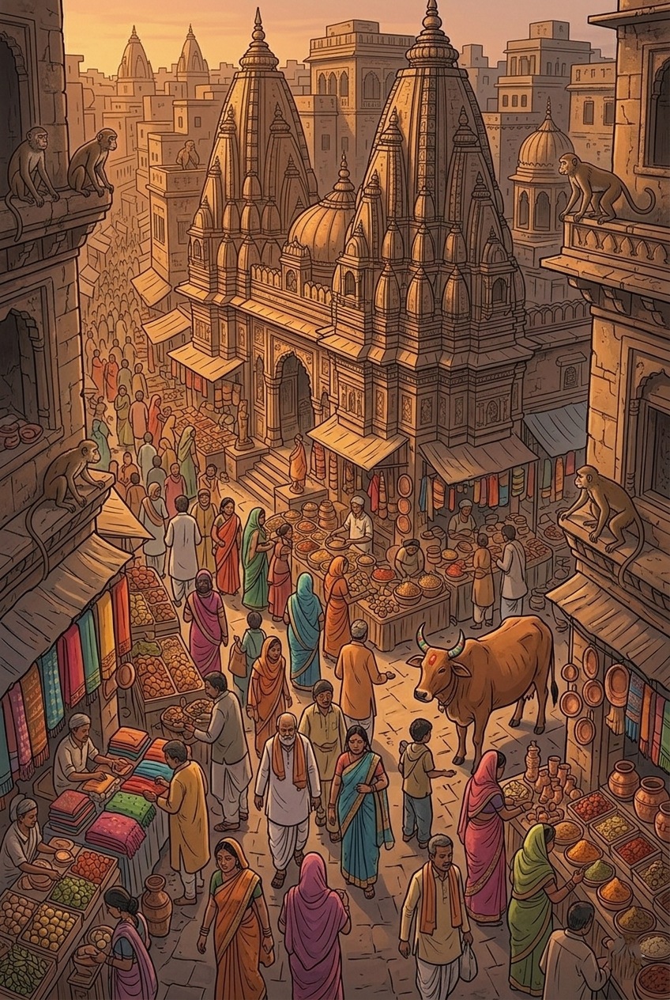
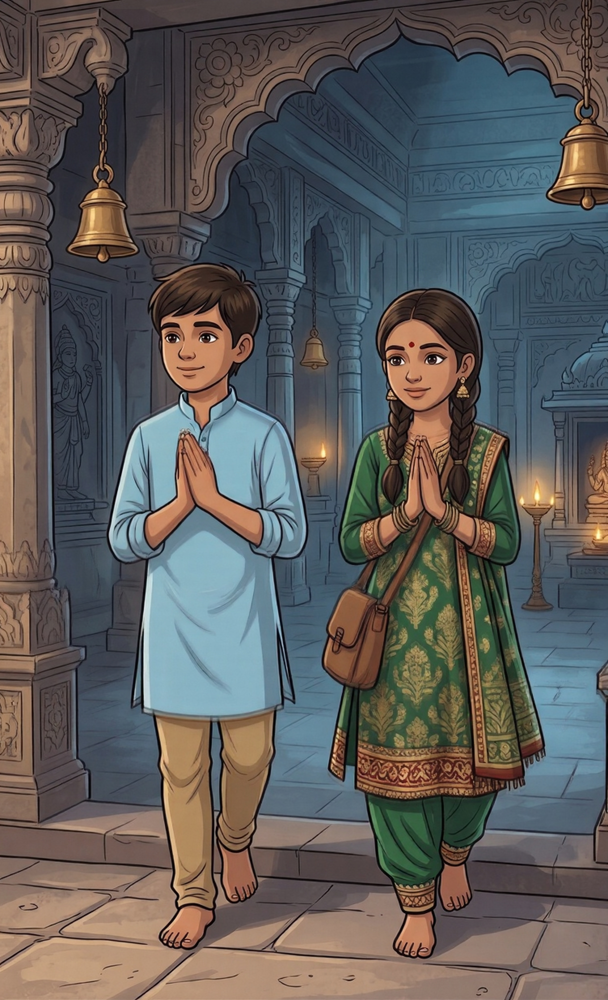
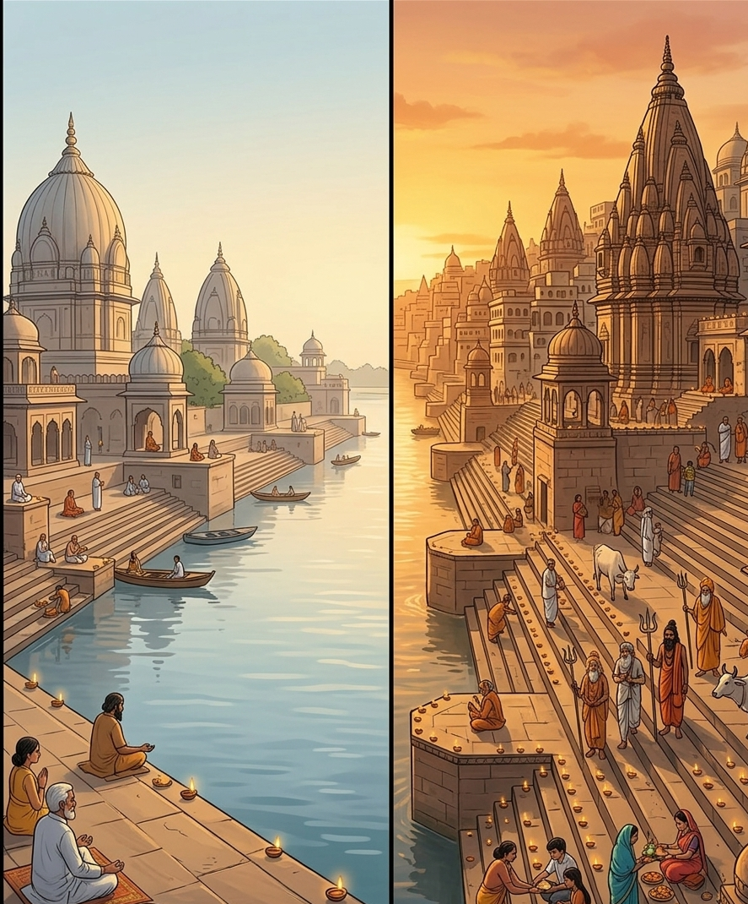
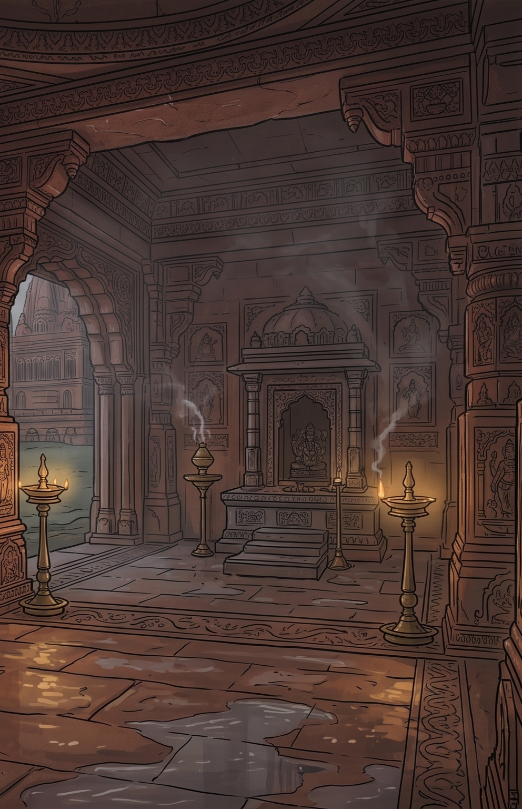
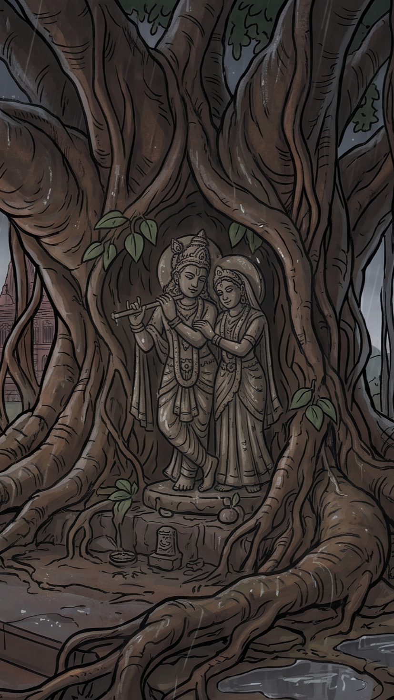

KHWAAB
A GRAPHIC NOVEL
Some dreams are seen with closed eyes.
Others wait for us to wake.


A DREAM.



A memory that never happened.
Or maybe it did.


A PLACE THAT NEVER EXISTED.






Somewhere between sleep and waking,
a world began to take shape.

1.5 YEARS.
FOR A DREAM
THAT REFUSED
TO DISAPPEAR.
KHWAAB was not created in a single prompt. It was not generated overnight.
It took roughly a year and a half of thinking, rewriting, imagining, experimenting, discarding ideas, and rebuilding scenes all in service of preserving one emotional vision.
AI was used as a creative tool because the scale of the imagined world was larger than the traditional resources available to an independent creator. But using AI did not remove the creative process. The story still had to be imagined. The scenes still had to be directed. The emotions still had to feel intentional.
Images had to be selected, rejected, regenerated, edited, sequenced, and transformed into a visual narrative. The hardest part was never generating an image it was making hundreds of visual decisions feel like they belonged to one dream.
WHY AI?
Because some worlds exist before we have the resources to build them.
Technology can become a bridge between imagination and execution a way for a single, independent creator to reach the scale a story like KHWAAB demanded, without a studio or a budget behind it. What mattered was never the tool itself, but the intention steering it.
THE TOOL CHANGED.
THE NEED TO TELL THE STORY DIDN'T.
THE DREAM EXISTS NOW.